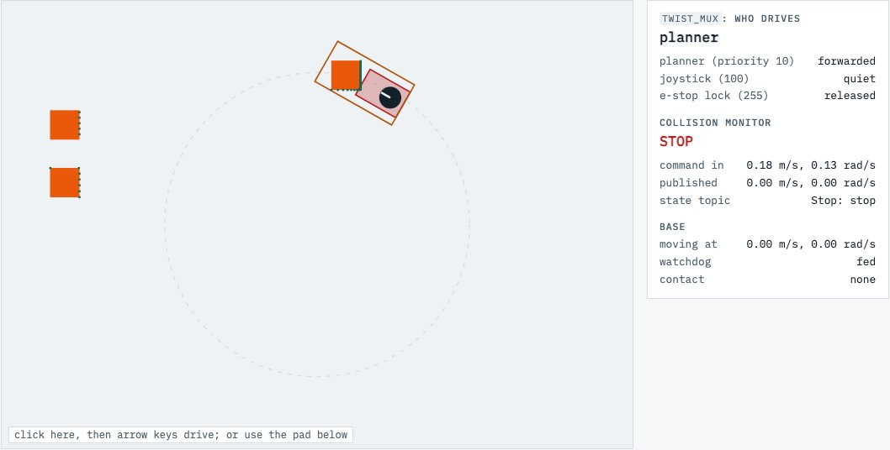

Beneficial AI Foundation
ROS 2 nodes, written in Lean
We prove safety and correctness properties of the Lean-implemented decision logic. This is experimental work in the vericoding style: agents get a lot of autonomy implementing, as long as Lean theorems required by humans can be proved.
The goal
The proofs cover the Lean decision logic. The C++ integration, ROS, and the robot hardware are outside their scope. ROSLean nodes can be used as a drop-in replacement for existing packages.
- WriteLogic in LeanThe node's decisions are one pure function: state and event in, new state and decision out.
- ProveTheorems in LeanLean checks each property under the conditions in its statement.
- RunAn ordinary ROS nodeLean compiles the function to C. A thin C++ shim handles topics, parameters and the clock.
Packages
Both packages use familiar ROS topics and parameter formats. Check each package for compatibility details.
-
Twist mux
Selects a velocity source, such as a planner or joystick. Locks block lower-priority sources.
Ported
PortedThe
twist_muxnode: the same parameter file, topics, priorities, timeouts and locks as the original.Not portedThe diagnostics publisher and the helper nodes
twist_markerandjoystick_relay. The launch file starts upstream's helper nodes when upstream is installed. Full accountVerifiedProvedLean proves when the mux forwards a command, including after any event history.
TestedThat it behaves like the original C++
twist_muxwith no performance penalty. This is tested by running both side by side. -
Collision monitor
Passes, slows, or stops velocity commands using one lidar and configured zones.
Ported in part
PortedOne laser scan source, circle and polygon zones, the actions
stopandslowdown, the lifecycle interface, the state topic, transforms, and zones fed by a topic.Not portedThe actions
approachandlimit, point clouds and other sources, several sources, velocity polygons. Nav2's default configuration usesapproach. Full accountVerifiedProvedLean checks when the model passes a command, slows it, demands a stop, or withholds velocity.
Trusted, not provedThe C++ shim computation of the scan's points and their transform in floating point.
See it run
A TurtleBot3 in Gazebo with the Lean twist_mux between a planner, scripted keyboard commands, and a stop lock.
Try it in the browser
A small simulated robot with both nodes in its command path. Put a box in its way, take over with the arrow keys, or press the emergency stop, and watch which source drives and what the monitor publishes.

The decisions are made by the same Lean functions the ROS nodes run, compiled to WebAssembly. The robot, the lidar and the boxes are a toy simulation written for the page.
Lessons learned
Three things this project has shown so far, each with its limits.
-
It is feasuble to write ROS decision logic in Lean
Two nodes run with their decisions made by a Lean function compiled to C. Each takes the original package's parameter file and topics and starts like any ROS 2 node.
What was built -
A theorem sheds light on important aspects of the implementation.
"When a stop is demanded, zero is published" could not be proved, because it is false: If for whatever reason a 0 was published shortly before, a stop will have no effect.
The stop that is not published -
Theorems point at places to harden
Writing down what the monitor does for every input showed that a laser scan with unusable range limits reads as free space: the command passes and nothing is logged.
Unlikely with common drivers. Still worth hardening the node.
Scans that read as free space